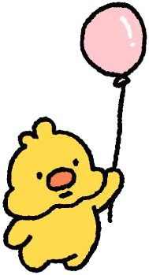
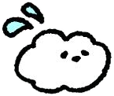
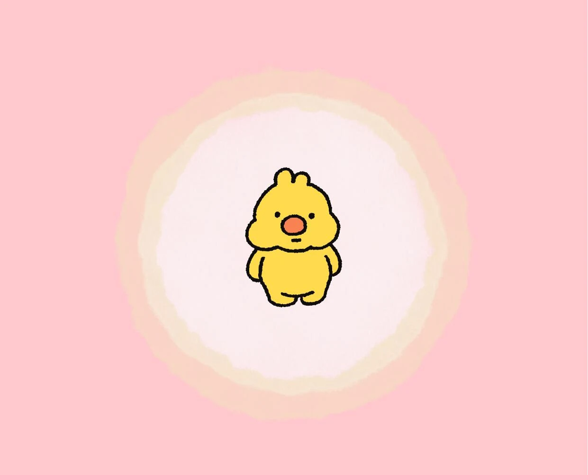
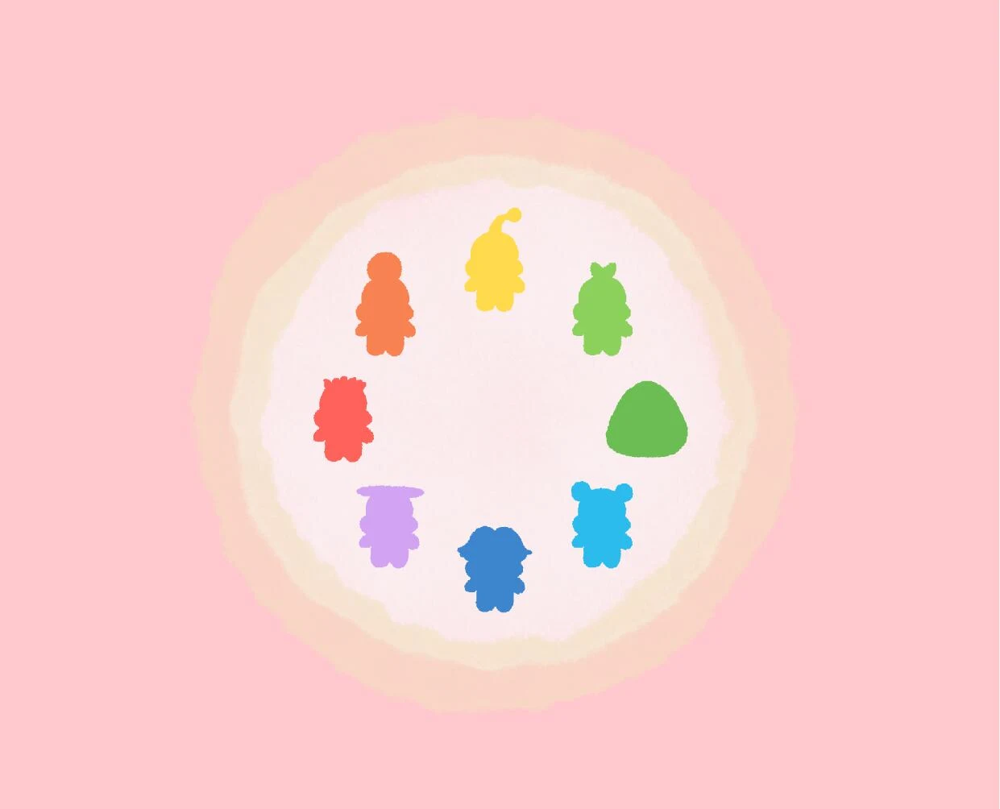
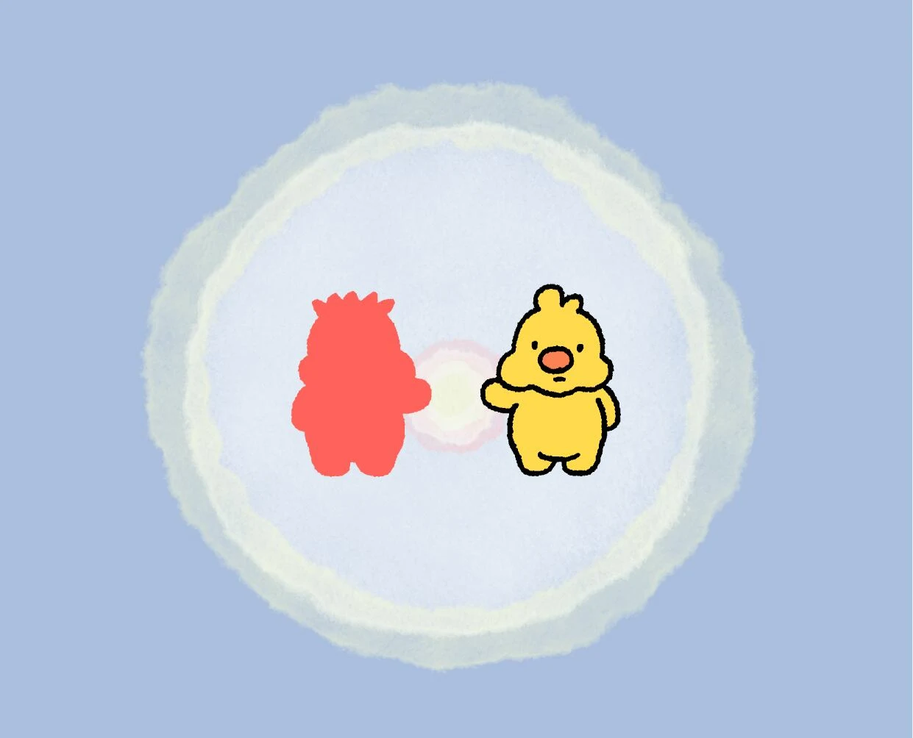
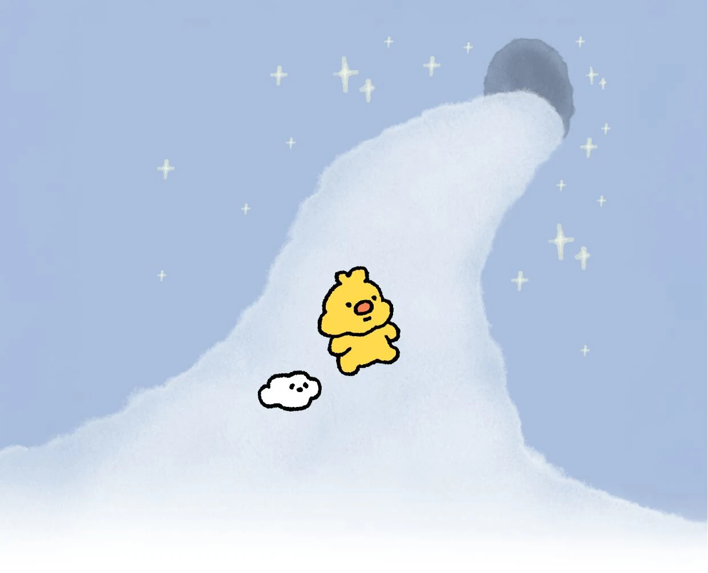
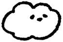
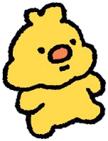

ぺろっぺPEROPPE
ぺろっぺは、
あなたの心のなかにいる、
もうひとりの自分。
喜んだり、慌てたりせず、
ただ静かに進んでいきます。
のんびりマイペースで、
ちょっぴり抜けている性格。


ぺろっぺって なあに？
喜んだり、怒ったり、慌てたり。
感情に揺れ動く毎日のなかで、
静かに、そこにいるものがいます。
ぺろっぺは、
あなたの心のどこかにいる、
もうひとりの自分のような
小さな生きもの。

説明できない気持ち。
うまく言えない感覚。
ぺろっぺの世界には、そんな感情たちが
それぞれの姿で暮らしています。

この世界では、
感情がすべてを決めるわけではありません。
感じることと、自分であることのあいだには、
ほんの少しの余白があります。

ぺろっぺの旅は、まだ途中です。
感情と出会い、離れ、また進む。

なかまたち
ぺろっぺは、
あなたの心のなかにいる、
もうひとりの自分。
喜んだり、慌てたりせず、
ただ静かに進んでいきます。
のんびりマイペースで、
ちょっぴり抜けている性格。

ぺろっぺのお供として、
一緒に旅をしているごましお。
のほほんとしているようで、
じつはしっかり者。
ぺろっぺのすることを、
いつも横でソワソワしながら
見守っているのである……。
えほん

語らないぺろっぺと、
そばで見守るごましお。
ふたりの旅が、絵本になります。
おしらせは Instagram と X で。
あそびば
じゅんびちゅう。